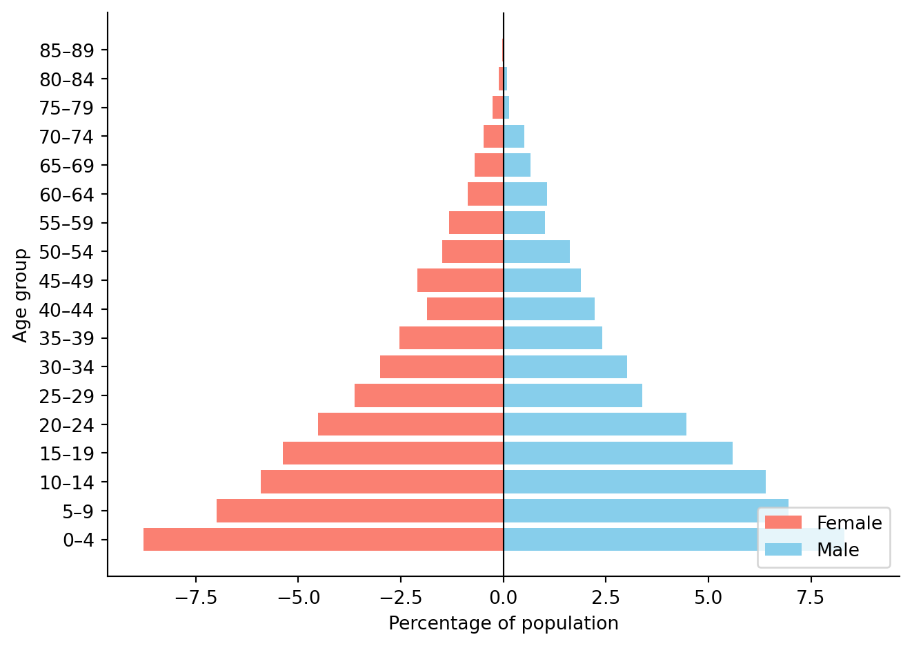
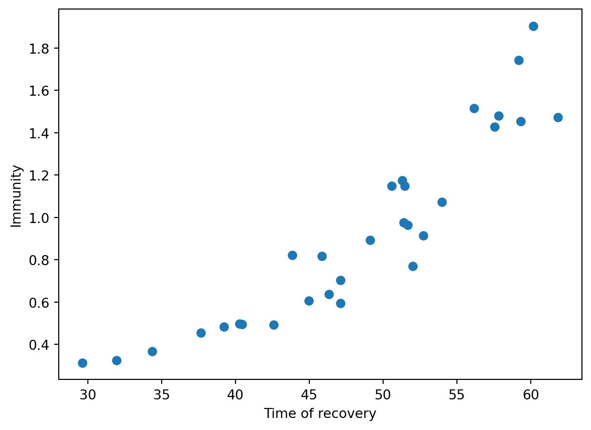

Starsim is a framework for creating agent-based models, and the People class is where we store the agents, so it should come as no surprise that this class serves as the fundamental heart of any Starsim model. In this page we provide alternative pathways for creating people and some guidance on how to adapt these workflows depending on your needs.
We start by giving an overview on this page of Starsim’s custom Arr (array) classes, which are a separate but related Starsim class designed to neatly track data about people.
Starsim States and Arrays
Starsim has a set of custom array classes for recording information about each agent in the population. The two fundamental types of array for storing such infomation are the BoolState class, which is a Boolean array, and the FloatArr class, which stores numbers (we don’t distinguish between floats and integers, so all numbers are stored in these arrays). Each of these is a subclass of the Starsim Arr class.
The Arr class in Starsim is optimized for three key tasks that are common to almost all Starsim models:
Dynamic growth: as the population grows over time, the size of the arrays dynamically update in a way that avoids costly concatenation operations;
Indexing: over time, there are agents in the population who die. It is desirable for these agents to remain in the arrays so that we can continue to access data about them, but the indexing is set up so that dead agents are automatically excluded from most operations.
Stochastic states: we often want to set the values of a state by sampling from a random variable (e.g. sex might be drawn as a Bernoulli random variable). Starsim’s Arr class can be initialized with a random variables; we will provide examples of this below.
All agents have a uid (universal identifier), which corresponds to their position in the array. Starsim keeps track of a list of auids (active UIDs), corresponding to agents who are alive or are otherwise participating in the simulation. This way, Starsim knows to skip over dead agents (or otherwise removed, e.g. from migration) when calculating disease progression, aging, etc.
In most cases, you shouldn’t need to worry about uids, auids, etc. However, this example illustrates how they work:
import sciris as scimport starsim as sssim = ss.Sim(start=2000, stop=2020, n_agents=1000, diseases='sir', networks='random', demographics=True, verbose=False)sim.init()sc.heading('Initial state')ppl = sim.peopleprint('Number of agents before run:', len(ppl))print('Maximum UID:', ppl.uid.max())print('Mean age:', ppl.age.mean())sc.heading('After running the sim')sim.run()res = sim.resultsprint('Number of agents after run:', len(ppl))print('Number of agents who were born:', sim.results.births.cumulative[-1])print('Number of agents who died:', sim.results.cum_deaths[-1])print('Maximum UID:', ppl.uid.max())print('Size of the raw arrays:', len(ppl.uid.raw))print('Mean age of alive agents:', ppl.age.mean())
—————————————
Initial state
—————————————
Number of agents before run: 1000
Maximum UID: 999
Mean age: 30.130148
—————————————————————
After running the sim
—————————————————————
Number of agents after run: 1230
Number of agents who were born: 460.0
Number of agents who died: 218.0
Maximum UID: 1459
Size of the raw arrays: 1500
Mean age of alive agents: 36.88307
Creating default people
When you create a sim, it automatically creates People, and you can use the n_agents argument to control the population size:
import numpy as npimport pandas as pdimport starsim as ss sim = ss.Sim(n_agents=1000) # Create a sim with default peoplesim.init()
Initializing sim with 1000 agents
Sim(n=1000; 2000—2050)
The People that are added to the Sim come with the following default states and arrays:
alive, a State that records whether each agent is alive
female, a State that records whether each agent is female
ti_dead, a FloatArr that records the time of death, NaN by default
scale, a FloatArr that records the number of people that each agent represents; 1 by default.
Creating custom people
Rather than relying on the Sim to create people, you can create your own People and add them to the Sim as a separate argument. The example below is equivalent to the one immediately above:
people = ss.People(1000)sim = ss.Sim(people=people)
The main reason to create custom people is if you want to specify a particular age/sex distribution. The following example creates a population with the age distribution of Nigeria:
Initializing sim with 10000 agents
Figure(672x480)

Another reason to create custom people is if there are additional attributes that you want to track. Let’s say we want to add a state to track urban/rural status. The example below also illustrates how you can add a stochastic state whose values are sampled from a distribution.
def urban_function(n):""" Make a function to randomly assign people to urban/rural locations """return np.random.choice(a=[True, False], p=[0.5, 0.5], size=n)urban = ss.BoolState('urban', default=urban_function)ppl = ss.People(10, extra_states=urban) # Create 10 people with this statesim = ss.Sim(people=ppl)sim.init() # Initialize the sim --> essential step to create the people and sample statesprint(f'Number of urban people: {np.count_nonzero(sim.people.urban)}')
Initializing sim with 10 agents
Number of urban people: 8
Modifying People with modules
We saw an example above of adding a custom state to people. However, a far more common way to add states to people is by adding a module to the Sim. All the states of the modules will automatically get added to the main People instance.
When states or arrays are added by modules, they are stored as dictionaries under the name of that module.
Note that the Starsim Arr class can be used like a Numpy array, with all the standard arithmetic operations like sums, mean, counting, etc.
Debugging and analyzing
There are several ways to explore the People object. One way is by exporting to a dataframe:
df = sim.people.to_df()df.disp()
uid slot alive age female ti_dead ti_removed scale randomnet.participant sis.susceptible sis.infected sis.rel_sus sis.rel_trans sis.ti_infected sis.ti_recovered sis.immunity
0 0 0 True 25.1524 False NaN NaN 1.0 False False True 0.0000 1.0 46.0 56.1627 1.5163
1 1 1 True 4.9883 True NaN NaN 1.0 False False True 0.2294 1.0 42.0 52.0214 0.7706
2 2 2 True 58.1494 False NaN NaN 1.0 False False True 0.0863 1.0 42.0 52.7087 0.9137
3 3 3 True 0.1302 False NaN NaN 1.0 False False True 0.0000 1.0 49.0 59.3261 1.4532
4 4 4 True 43.8199 False NaN NaN 1.0 False False True 0.0000 1.0 43.0 53.9736 1.0737
5 5 5 True 42.6909 False NaN NaN 1.0 False True False 0.6862 1.0 20.0 29.6344 0.3138
6 6 6 True 54.2923 True NaN NaN 1.0 False True False 0.2953 1.0 37.0 47.1078 0.7047
7 7 7 True 52.6040 False NaN NaN 1.0 False True False 0.6314 1.0 25.0 34.3523 0.3686
8 8 8 True 7.0769 False NaN NaN 1.0 False False True 0.0251 1.0 41.0 51.3925 0.9749
9 9 9 True 27.2292 False NaN NaN 1.0 False True False 0.1064 1.0 39.0 49.1210 0.8936
10 10 10 True 4.0500 True NaN NaN 1.0 False True False 0.1828 1.0 34.0 45.8417 0.8172
11 11 11 True 42.6985 False NaN NaN 1.0 False False True 0.0000 1.0 49.0 57.8087 1.4802
12 12 12 True 25.2828 True NaN NaN 1.0 False False True 0.0000 1.0 48.0 57.5599 1.4279
13 13 13 True 27.6266 True NaN NaN 1.0 False True False 0.3926 1.0 36.0 44.9499 0.6074
14 14 14 True 24.6072 False NaN NaN 1.0 False False True 0.0362 1.0 42.0 51.6577 0.9638
15 15 15 True 48.8226 False NaN NaN 1.0 False True False 0.1770 1.0 35.0 43.8462 0.8230
16 16 16 True 16.9486 False NaN NaN 1.0 False True False 0.5447 1.0 28.0 37.6368 0.4553
17 17 17 True 19.6193 True NaN NaN 1.0 False True False 0.5025 1.0 31.0 40.2820 0.4975
18 18 18 True 40.8453 True NaN NaN 1.0 False False True 0.0000 1.0 43.0 51.2966 1.1735
19 19 19 True 25.0690 False NaN NaN 1.0 False True False 0.4052 1.0 35.0 47.0952 0.5948
20 20 20 True 24.1976 False NaN NaN 1.0 False False True 0.0000 1.0 41.0 50.5722 1.1485
21 21 21 True 27.8875 False NaN NaN 1.0 False False True 0.5276 1.0 50.0 61.8450 1.4724
22 22 22 True 7.1277 True NaN NaN 1.0 False True False 0.5071 1.0 32.0 42.5898 0.4929
23 23 23 True 35.5697 False NaN NaN 1.0 False True False 0.5034 1.0 30.0 40.4424 0.4966
24 24 24 True 36.3433 True NaN NaN 1.0 False True False 0.3615 1.0 37.0 46.3120 0.6385
25 25 25 True 58.3792 False NaN NaN 1.0 False True False 0.5156 1.0 30.0 39.2283 0.4844
26 26 26 True 1.6279 True NaN NaN 1.0 False True False 0.6753 1.0 22.0 31.9325 0.3247
27 27 27 True 49.9440 False NaN NaN 1.0 False False True 0.0966 1.0 50.0 60.1813 1.9034
28 28 28 True 50.4779 False NaN NaN 1.0 False False True 0.0000 1.0 40.0 51.4462 1.1485
29 29 29 True 39.0536 False NaN NaN 1.0 False False True 0.2576 1.0 50.0 59.1780 1.7424
This is usually too much information to understand directly, but can be useful for producing summary statistics; for example, let’s say we want to understand the relationship between time since recovery and immunity:
import matplotlib.pyplot as pltplt.scatter(df['sis.ti_recovered'], df['sis.immunity'])plt.xlabel('Time of recovery')plt.ylabel('Immunity')plt.show()

Sometimes we want to explore a single agent in more detail. For this, there is a person() method, which will return all the attributes of that particular agent (equivalent to a single row in the dataframe):